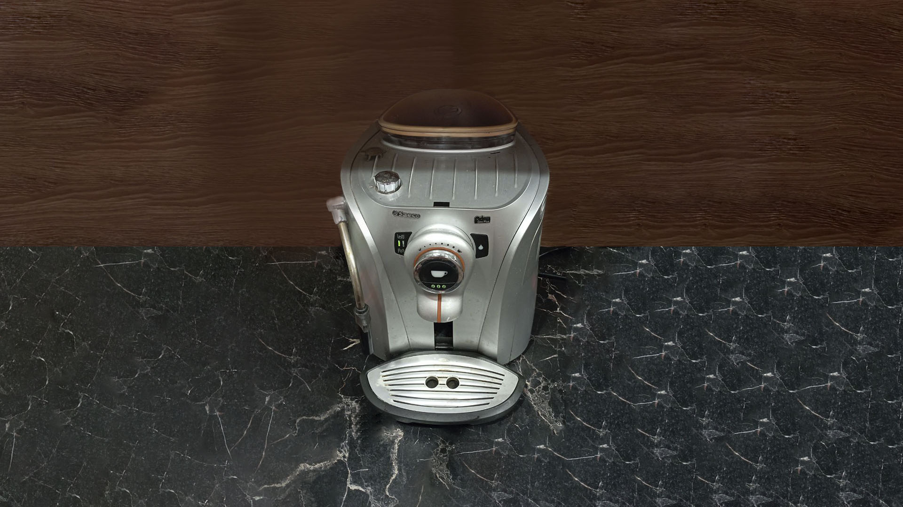

Белорусский государственный технологический университет
Факультет Информационных технологий
Кафедра информационных систем и технологий
Курсовой проект
По дисциплине
"Компьютерные мультимедийные системы"
Тема: Симулятор Кофемашины
